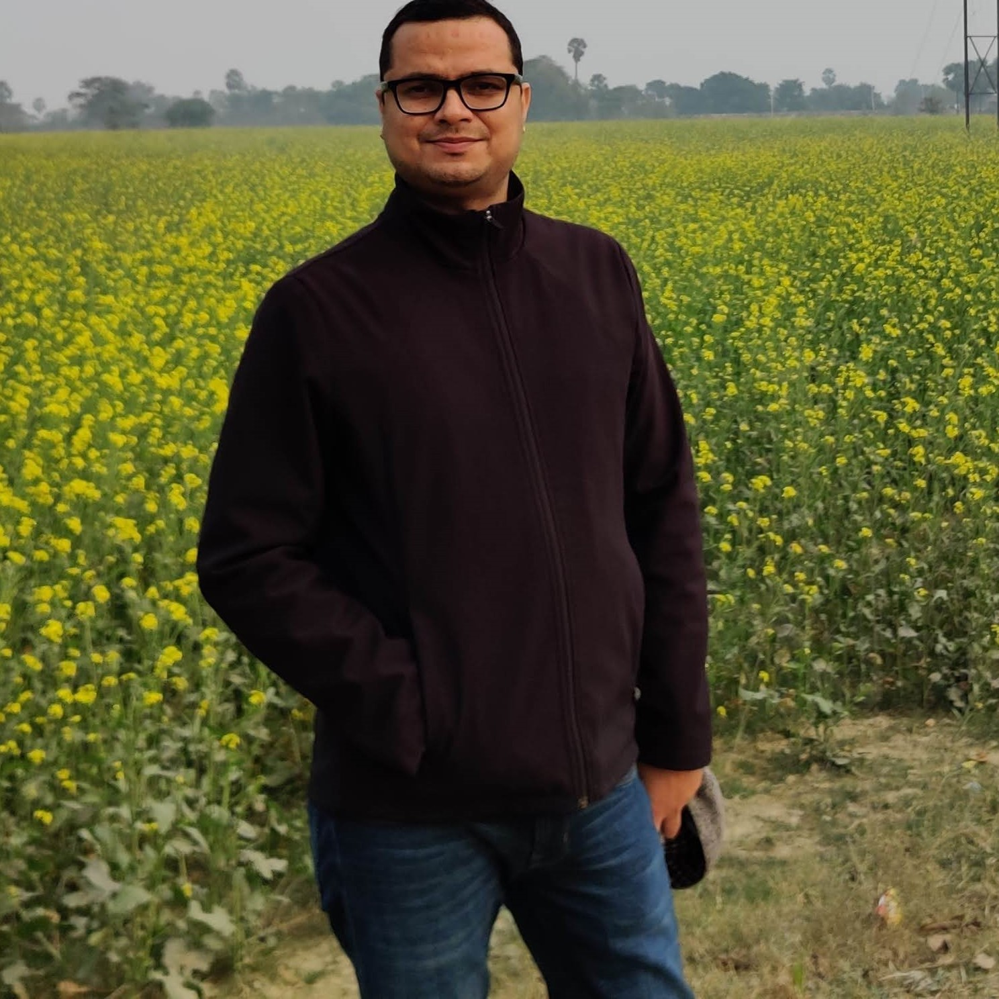

| Publications | |
|---|---|
| 1 | Valorization of Rohu (Labeo rohita) Fish Scale Waste Through Gelatin Extraction: Physicochemical, Thermal, Rheological, and Functional Characterization, 2026, Khilesh Kumar, Jitender Kumar Jakhar, Soibam Ngasotter, Sanjeev Sharma, Kumar Gaurav, Domendra Dhruve, David Waikhom, F. Tameshwar, Pabitra Barik, Dushyant Kumar Damle, Ankur Jamwal, Sunita Jakhar, Waste, https://www.mdpi.com/2813-0391/4/3/27 |
| 2 | Interactive effects of carbendazim and cold shock on haematology and behaviour of juvenile Labeo rohita, 2025, Muskan Kosriya, Pravesh Kumar, Sujit Kumar Nayak, Ankur Jamwal, Discover Environment, http://dx.doi.org/10.1007/s44274-025-00244-4 |
| 3 | Fructooligosaccharide and Bacillus subtilis synbiotic combination promoted disease resistance, but not growth performance, is additive in fish, 2023, Nilesh Anil Pawar, Chandra Prakash, Mahinder Pal Singh Kohli, Ankur Jamwal, Rishikesh Subhashrao Dalvi, B. Nightingale Devi, Soibam Khogen Singh, Shobha Gupta, Smit Ramesh Lende, Sadanand D. Sontakke, Subodh Gupta, Sanjay Balkrishna Jadhao, Scientific Reports, http://dx.doi.org/10.1038/s41598-023-38267-7 |
| 4 | Identification of best detoxification strategies for sustainable valorization of waste from Jatropha-based biodiesel industry: Compounding the benefits of plant-based vehicular fuel, 2021, Vikas Phulia, Parimal Sardar, Ankur Jamwal, Vikas Kumar, Shamna N., Femi J. Fawole, Bhushan N. Sanap, N.P. Sahu, Subodh Gupta, Environmental Technology & Innovation, https://doi.org/10.1016/j.eti.2021.101911 |
| 5 | Multisectoral one health approach to make aquaculture and fisheries resilient to a future pandemic‐like situation, 2021, Ankur Jamwal, Vikas Phulia, Fish and Fisheries, https://doi.org/10.1111/faf.12531 |
| 6 | Mitigating multiple stresses in Pangasianodon hypophthalmus with a novel dietary mixture of selenium nanoparticles and Omega-3-fatty acid, 2021, Kumar, N., Singh, D.K., Bhushan, S., Jamwal, A., Scientific Reports, http://www.scopus.com/inward/record.url?eid=2-s2.0-85115908972&partnerID=MN8TOARS |
| 7 | Dicamba elevates concentrations of S-adenosyl methionine but does not induce oxidative stress or alter DNA methylation in rainbow trout (Oncorhynchus mykiss) hepatocytes, 2020, Ankur Jamwal, Comparative Biochemistry and Physiology Part D: Genomics and Proteomics, http://dx.doi.org/10.1016/j.cbd.2020.100744 |
| 8 | The effects of dietary selenomethionine on tissue-specific accumulation and toxicity of dietary arsenite in rainbow trout (Oncorhynchus mykiss) during chronic exposure, 2019, Ankur Jamwal, Yusuf Saibu, Tracy C MacDonald, Graham N George, Som Niyogi, Metallomics, https://doi.org/10.1039/c8mt00309b |
| 9 | A FTIRM study of the interactive effects of metals (zinc, copper and cadmium) in binary mixtures on the biochemical constituents of the gills in rainbow trout ( Oncorhynchus mykiss ), 2018, Ankur Jamwal, Comparative Biochemistry and Physiology Part C: Toxicology & Pharmacology, http://dx.doi.org/10.1016/j.cbpc.2018.05.009 |
| 10 | Distribution and speciation of zinc in the gills of rainbow trout ( Oncorhynchus mykiss ) during acute waterborne zinc exposure: Interactions with cadmium or copper, 2018, Ankur Jamwal, Comparative Biochemistry and Physiology Part C: Toxicology & Pharmacology, http://dx.doi.org/10.1016/j.cbpc.2018.02.004 |
| 11 | Source = ORCID |

Environmental Toxicologist & Exposure Assessment Specialist
I help governments, universities, and NGOs turn environmental exposure data — arsenic in drinking water, contaminants in food systems, climate-linked health risks — into evidence that shapes policy and protects public health. I also run hands-on R and data-analytics workshops for teams and institutions with no prior coding experience.
Currently Assistant Professor at Azim Premji University, Bengaluru - India, leading a government-funded study on arsenic exposure in Bihar and a satellite-based regenerative agriculture assessment with ISRO. Research experience spans the University of Saskatchewan, Advanced Photon Source (Chicago), and Canadian Light Source.
Message me on LinkedIn about consultancy, training, or collaboration →
16H-index
728Citations
20Papers (ORCID)
10+Years research
Work With Me
I partner with organizations on:
- Exposure & risk assessment — designing and running studies on environmental contaminants (heavy metals, pesticides, emerging pollutants) and their human/ecological health impact
- One Health & climate-health advisory — consulting on the intersection of climate change, food systems, and public health for NGOs, funders, and government bodies
- R & data analytics training — custom workshops in environmental/agricultural statistics for teams and institutions with no prior R experience
- Scientific writing & review — grant writing support, peer review, and technical report authorship
Education
PhD in Biology (Aquatic Ecotoxicology) | University of Saskatchewan, Saskatoon | Saskatchewan, Canada
MFSc (Master of Fisheries Science) in Fish Physiology and Biochemistry | Central Institute of Fisheries Education, Mumbai | Maharashtra, India
BFSc (Bachelor of Fisheries Science) | Kerala Agricultural University, Thrissur | Kerala, India
Experience
Feb 2023 – current Assistant Professor, Azim Premji University, Bengaluru, Karnataka, India
Sept 2018 – Feb 2023 Assistant Professor, Dr. Rajendra Prasad Central Agricultural University, Pusa, Bihar, India
Jan 2018 – Sept 2018 Postdoctoral fellow (Dr. Steve Wiseman’s lab), University of Lethbridge, Canada
Featured Work
Arsenic Exposure Assessment, Buxar, Bihar — Principal Investigator, Azim Premji University Research Centre Assessing dietary arsenic exposure in a vulnerable population to inform local public health response.
Regenerative Agriculture Impact Assessment (NISAR + ML) — Co-Principal Investigator, funded by ISRO Using satellite data and machine learning to measure the on-ground impact of regenerative farming practices.
Arkavathy River Basin Water Quality Assessment — Consultancy, Paani Earth Foundation, Bengaluru Sediment and water quality evaluation for one of Bengaluru’s key river basins.
Environmental Impact of Intensive Aquaculture — Ongoing research Assessing the environmental footprint of intensive aquaculture practices.
Selected Awards and Honours
- ICAR International Fellow — Ministry of Agriculture, Govt. of India, doctoral degree programme
- MEXT Japanese Government Scholarship — doctoral programme on climate change effects on fish reproduction (declined)
- Gold Medalist — M.F.Sc. and B.F.Sc. degree programmes, with “Best M.F.Sc. Graduate Researcher” and “Best Fisheries Graduate of India 2010–11” honours
- Junior Research Fellowship (JRF-PGS) & National Talent Scholarship — Indian Council of Agricultural Research
Publications
Updated: August, 08, 2026
Teaching & Training
Certificate workshops: Basic Statistics in Environmental and Agricultural Sciences using R · Introduction to Environmental Analytics using R
University courses designed: Environmental Pollution (Air, Water and Soil) I & II · Environmental Microbiology, Biotechnology and Ecology
Get in Touch
Interested in a consultancy project, an R/data-analytics training, or a collaboration? Message me on LinkedIn — I also take on Quarto website and blog-writing support requests.